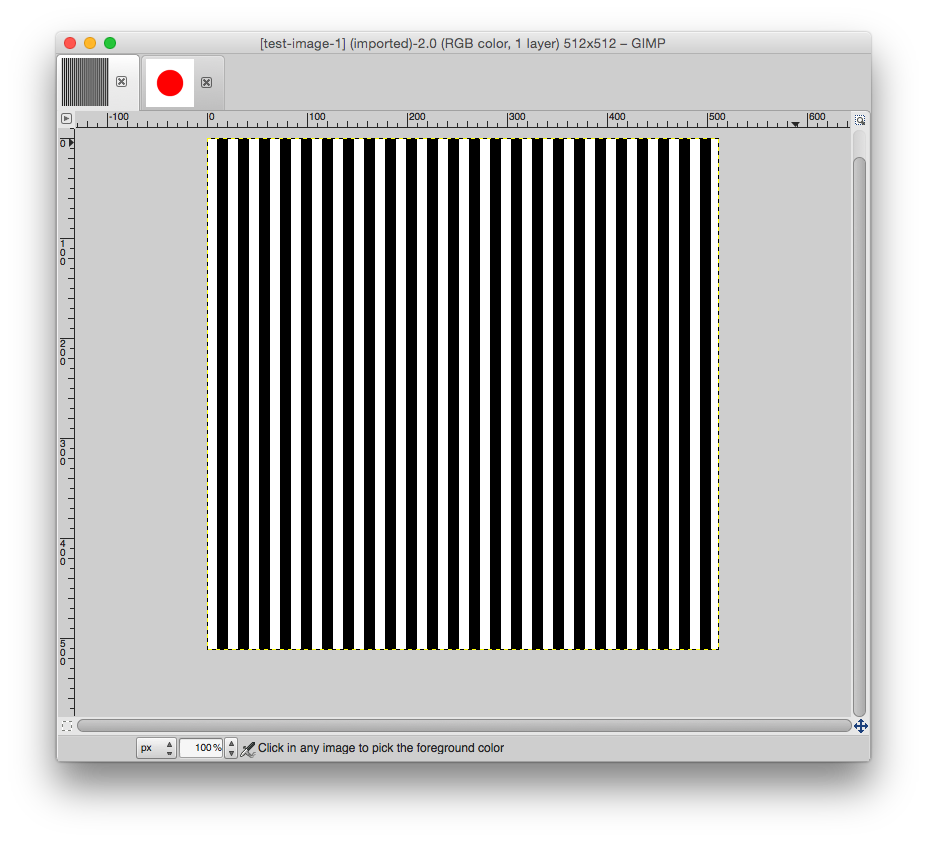
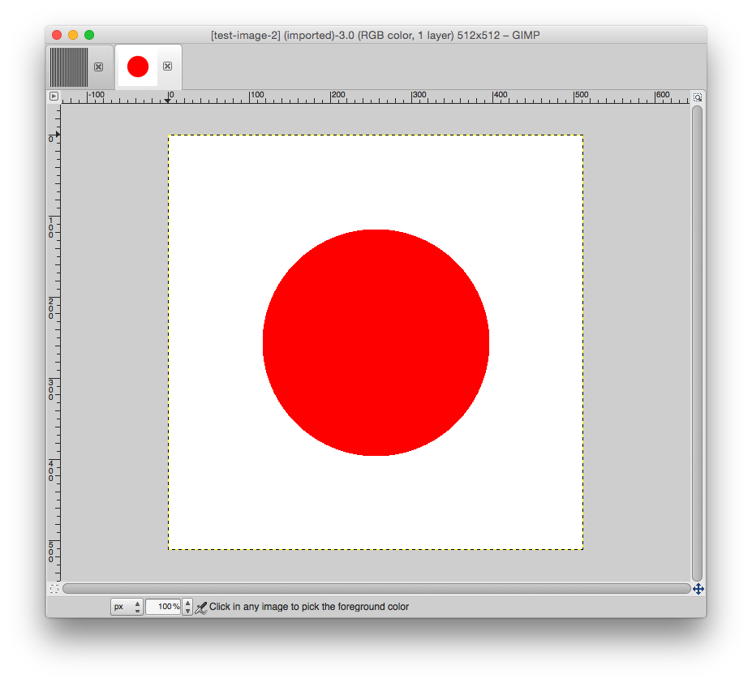

---

layout: default
title: 03-new-images

---

{% highlight c++ %}
// Tyler Mumford, 2014
// Creating a couple of new images.

#include <stdio.h>
#include <math.h>

int main () {
	const int WIDTH = 512, HEIGHT = 512;
	const unsigned char RED[] = {1,0,0}, 
	                    GREEN[] = {0,1,0},
	                    BLUE[] = {0,0,1},
	                    WHITE[] = {1,1,1},
	                    BLACK[] = {0,0,0};

	int i, j;
	FILE *image1, *image2;

	image1 = fopen("test-image-1.ppm", "w");

	// Zebra stripes
	fprintf(image1, "P6\n%i %i\n1\n", WIDTH, HEIGHT);
	for (i=0; i<WIDTH; i++) {
		for (j=0;j<HEIGHT; j++) {
			if (j%21 < 10)
				fwrite(WHITE, 1, 3, image1);
			else
				fwrite(BLACK, 1, 3, image1);
		}
	}

	fclose(image1);
	image2 = fopen("test-image-2.ppm", "w");

	// Japanese flag
	fprintf(image2, "P6\n%i %i\n1\n", WIDTH, HEIGHT);
	int centerX = WIDTH/2, centerY = HEIGHT/2;
	int distance;
	for (i=0; i<WIDTH; i++) {
		for (j=0;j<HEIGHT; j++) {
			distance = sqrt( (i-centerX)*(i-centerX) + (j-centerY)*(j-centerY) );
			if (distance < 140)
				fwrite(RED, 1, 3, image2);
			else
				fwrite(WHITE, 1, 3, image2);
		}
	}

	fclose(image2);
	return 0;
}
{% endhighlight %}



